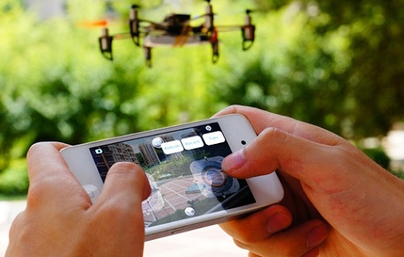

開源飛行器 HEX

◎本文原載 Linux Pilot，原文章連結按此。
遙控飛行器是很多人的夢想，但體積太大、燃料不環保、價格高昂、難以控制和難找地方，都是令人卻步的障礙。但從現在起這些問題都不再是問題了，開源飛行器 HEX 即將改變這一切。

HEX 飛行器是世界第一款用智能手機控制、與 3D 打印結合的四軸飛行器。外殼由 3D 列印實現個性化定製，用戶可以自行下載開發團隊提供的模板，「列印」出自己喜歡的外殼，組裝方式類似模型，非常簡單。HEX 飛行器較早前在集資網站 Kickstarter，在期限前已經籌得超過 18 萬美元，比原來的目標 10 萬美元多出接近一倍，可見它受期待的程度。
HEX 飛行器通過低功耗藍牙 4.0 控制，有效距離 50 米，不需要太複雜的遠程控制就可令它起飛。只要在 iOS 或 Android 設備上下載一個應用程式，便可以將手機變成遙控器。HEX 飛行器更搭載了各種傳感器，這有助於使飛行更加安全和穩定，大量減少墜機的風險。
電子裝置兼容於開源的 Arduino，用戶可自由為它追加裝備，但因為是飛行器的關係，必須留意裝備的重量。官方配件如攝像鏡頭、WIFI 視頻模組等早就考量到這這一點，所有配件都列出了重量。HEX 有兩款飛行器，一款是大型飛行器，近 1 米的直徑，可以搭載 1KG 的裝備，在 Kickstarter 上集資的則是小型版本的四軸飛行器，直徑只有 5.6CM。值得留意的是 HEX 是中國團隊的作品，成員來自世界各地。